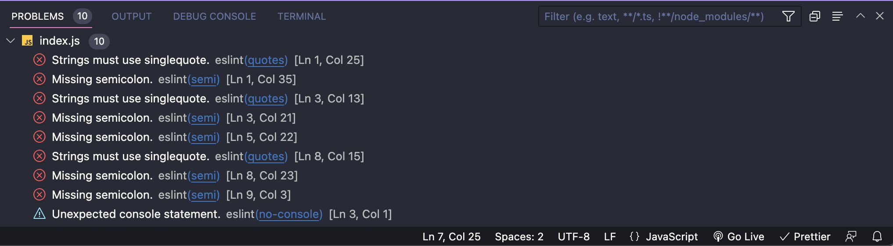

感覺有點晚才開始碰這玩意兒。
VS-Code
請先安裝底下這兩個 Extension：
Prettier 的用意是讓你可以直接在 VS-Code 上存檔後自動格式化（formatOnSave），ESLint 的用意是直接在背後做語法檢查並顯示在 VS-Code 上。
換句話說就是：
請 VS-Code 全部幫我自動執行，我不想要自己用 CLI 來跑 prettier 或 eslint lint 來做格式化或語法檢查。
關於 eslint.rc 懶人包
- env：告訴 ESlint 目前的執行環境是什麼（才能判斷該環境有哪些全域變數）
- extends：人家寫好的 config，例如 airbnb
- plugin：為 ESLint 添加新的規則（但不包含怎麼設定這些規則）
- rules：用來撰寫自己想要 / 不想要的規則
- parserOptions：設定語言規範 or 額外功能（例如 ES6、JSX），讓 ESlint 能看得懂
最常搞混的應該是 extends 和 plugin，所以這邊再強調一次：
plugin 是拿來「添加規則」用的，但不包含「怎麼設定這些規則」。如果要設定就得透過 rules 去一個一個調整，不過這樣子實在有點麻煩，所以就有了 extends 這個東西，它的想法是直接把「別人寫好的 rules」套用進來。
需安裝的套件（devDependencies）
- eslint-config-airbnb：整個 airbnb 的組合包，裡面會包含多個 plugin 和一個 config
- prettier：core package
- eslint：core package
- eslint-plugin-prettier：添加 prettier 的規則
- eslint-config-prettier：設定 prettier plugin 的 config
建立 Prettier config
在根目錄建立 .prettierrc 並填入你想要的規則即可：
1 | { |
之所以要建立這個檔案是為了讓所有人的格式是一致的，在這裡建立的規則會直接覆寫每個人自己在 VS-Code 中的設定，所以任何人在這份專案底下跑 prettier 的結果都會是相同的，不用擔心設定不同的問題。
建立 Eslint config
- 方法一：自己建立
.eslintrc檔案 - 方法二：先用 npm 安裝 global eslint，接著再用
eslint --init來建立
這邊用方法二建立出來的檔案內容大概會是這樣：
1 | { |
這邊先注意 extends 就好，其他先看註解理解個大概就好，能看到預設的 ESlint 會用 eslint:recommended 這套規則，例如：no-unused-vars。
但這邊我們想要改成 airbnb 寫好的規則，所以會修改成下面這樣：
1 | { |
這時候就可以看到多出了一些不同的 lint，像 import/no-unresolved，這邊注意到 lint 除了指出問題（no-unresolved）以外，還會標示出這個 rule 的來源是誰，這邊是斜線前面的 import，代表說這個規則是從 import 這個 plugin 來產生的。
附註：前面在安裝 eslint-config-airbnb 的時候會順便安裝的 plugin 包含：
eslint-plugin-importeslint-plugin-reacteslint-plugin-react-hookseslint-plugin-jsx-a11y
這些都是 airbnb config 在撰寫規則時會用到的規則，所以他才會安裝這些 plugin，你也可以到 package.json 確認：
1 | "devDependencies": { |
prettier 一跑下去滿江紅，怎麼辦？

這是因為我們對 prettier 的設定可能會跟 airbnb 的風格有衝突，像是單雙引號、句尾分號等等之類的問題。
雖然我們可透過 rule 去對 airbnb 一個一個做調整，但更簡單的做法是「直接用 prettier config 去覆蓋掉 airbnb config」，所以只要把 extends 的部分修改成這樣就好：
1 | { |
附註：這邊的原理是讓 prettier 的優先權 > airbnb，而不是讓 prettier 依照 airbnb 的規則去排版。因此 prettier 跑完的結果其實還是會跟 airbnb 的規則有衝突，但因為我們有指定優先權的關係，ESlint 就會知道要遵循 prettier 的規則，不會再顯示錯誤訊息。
為什麼 prettier 的規則不會有提示？
要記得，ESLint 本身是不包含 prettier 的各項規則的，如果我們想要添加新的規則到 ESLint 就得透過 plugin。
還記得前面我們有安裝 eslint-plugin-prettier 嗎？現在只需要把它加入到 .eslintrc 即可：
1 | { |
除了這種寫法以外，你去看 官方文件 的話他會說也可以這樣寫：
1 | { |
這邊改成只寫了 extends 而不寫 plugins，而且名稱也跟以往的 convention 不太一樣是為什麼呢？想知道詳細的話可以參考 這篇文章，裡面解釋得蠻清楚的。
簡單來說的話就是在我們安裝 prettier-plugin 的時候它直接幫你寫了一份設定檔（可以用來 extends 的那個）。這份設定檔跟一般常見的設定檔不太一樣，原本的設定檔是只有幫你寫好 rules，而 plugin 的部分你要自己去指定。
但現在這份設定檔直接幫你包含 rules 和 plugins 的設定，所以你只需要用 extends 來套用這份設定檔，跟確定你有安裝這套 plugin 就好了。
額外補充：用 ESLint 的 autoFix 來取代 prettier
為了避免 prettier 和 ESLint 衝突的問題，有些人會傾向這種想法
我直接用 ESlint 自動修復的功能來排版就好，幹嘛用 prettier？
關於這點我個人還是傾向用 prettier 的方式來排版。雖然 ESlint 的自動修復確實很方便，但我認為這種方便可能會讓你忽略掉自己到底寫錯了什麼，會有點失去當初用 ESLint 的初衷。
想解決衝突的問題我建議還是用前面提到的 prettier-plugin 來處理會好一點，雖然說背後的原理是讓 prettier 直接覆蓋掉其他規則，但至少會覆蓋掉的規則都是跟程式碼品質比較無關（單雙引號之類的）的層面，我認為這對整體在用 ESLint 的效果會更好一點。
倘若真的碰到不想要用 prettier 的團隊的話，我的建議是到 VS-Code 添加這些設定就好，不需要直接把 prettier 移除或整個 disabled 掉：
1 | { |
這樣的好處是你只有把會跟 ESlint 衝突的語言給關掉 prettier 而已，但在其他跟 ESlint 無關的語言（例如 HTML、CSS）你還是可以繼續用 prettier。